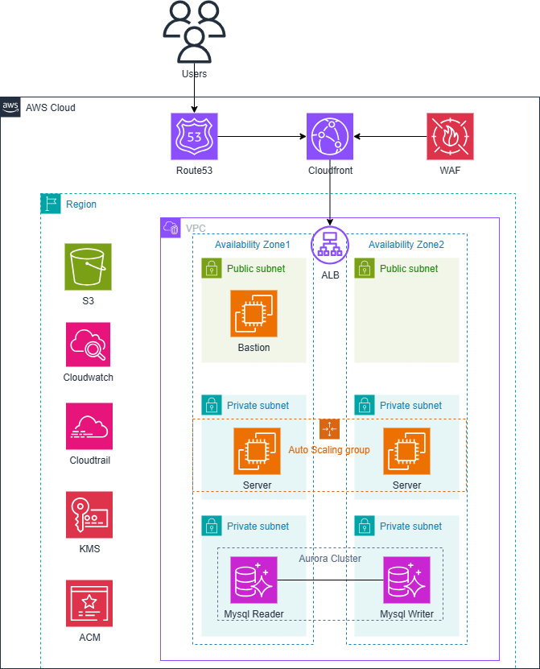

某公司 | 内部数据管理平台
1. 项目背景
某公司是一家中小型创新型企业，现有员工约30人，年营业额约400万美元。公司专注于法律服务与数字化转型，业务涵盖法律咨询、合规管理、诉讼支持等多个方向，其中内部数据管理平台是公司运营管理的核心系统之一。
该平台致力于构建一个安全、高效、智能且合规的法律业务管理系统。平台整合案件管理、客户信息、法律文档存储与检索功能，具备高并发处理能力，能够支持公司内部海量法律文档的实时管理与处理，并通过顶级安全防护保障公司及客户敏感数据安全。随着业务国际化发展，需要为不同地区办公室提供统一的数据管理服务。
随着业务扩展，新加坡办公室访问深圳服务器时存在明显延迟，尤其在大型案件与紧急事务期间，数据同步波动更突出；同时外部网络攻击与 DDoS 事件增多，影响办公与客户服务。基于此，建议采用 AWS 云技术重构平台，实现弹性伸缩、安全合规与便捷运维。
2. 项目目标
- 降低访问延迟：在 AWS 新加坡区域部署 EC2，就近访问显著加速，保证高峰期数据处理流畅。
- 增强安全性：使用 AWS Shield 与 WAF 等安全服务，抵御网络与 DDoS 攻击，保护敏感法律数据与客户信息。
- 提升业务可用性：通过 ELB + 多可用区 EC2 消除单点故障，确保案件高峰与紧急处理时平台稳定。
- 优化性能与成本：以 Auto Scaling 按需伸缩 EC2 容量，结合 Reserved Instances 与成本工具降低 TCO。
- 持续技术支持：在 AWS 与点一云支持下，建立性能评估与安全审计机制，持续优化平台能力。
3. 项目架构图

架构要点：多可用区 VPC、公私子网、ALB 前端与 Auto Scaling EC2 应用层，S3 存储与端点、Aurora/MySQL 读写分离，前置 WAF/CloudFront/Route53，配合 CloudWatch/CloudTrail/KMS 审计与密钥管理
4. 项目成果
- 显著降低延迟：新加坡区域就近部署，跨境访问延迟明显下降，办公效率与处理速度提升。
- 安全性增强：Shield + WAF 自动化防护，约 95% 常见攻击被拦截，内部与客户数据更安全。
- 高可用保障：ELB + 多可用区 EC2 提升可用性至 99.9% 级别，案件高峰与紧急事务期间保持稳定。
- 性能与成本优化：Auto Scaling 高峰稳定、低谷降本；Reserved Instances 等策略降低长期成本。
- 持续改进能力：建立例行评估与安全审计流程，持续优化系统以适配业务扩展。